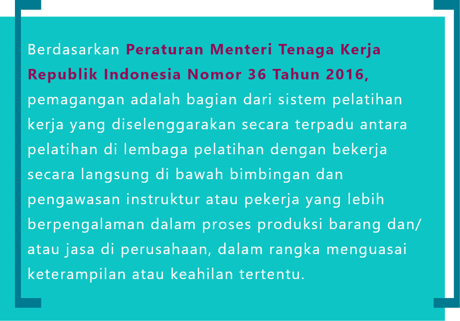

- Identitas diri yang lengkap
- Deskripsi yang singkat & padat
- Bagi keterampilan menjadi soft skill & hard skill
- Buat CV yang kreatif
- Memiliki CV daring seperti LinkedIn
- Siapkan portofolio dengan kreatif
Usia remaja enggak hanya melulu soal pacar, gebetan, mantan atau sahabat, ya. Sebagai remaja, kita harus memiliki pandangan tentang masa depan, termasuk sudah-kah kita yakin dan mempersiapkan diri agar bisa mendapatkan pekerjaan layak di masa depan?
Berdasarkan survei yang CewekBanget.ID & HAI Online lakukan pada 2.442 remaja perempuan dan laki-laki berusia 15-24 tahun

Remaja percaya diri mendapatkan pekerjaan layak di masa depan karena mereka punya kompetensi atau keterampilan khusus.
Tidak yakin mendapat pekerjaan yang layak di masa depan karena jumlah pencari kerja terus meningkat dan kompentensi mereka tidak sesuai dengan kebutuhan perusahaan.
“Sempat enggak percaya diri karena enggak ada koneksi dan persaingan kerja semakin ketat. ” -Abiel Kristianto, Junior Arsitek, Alumni Universitas Tarumanegara
“Kurang percaya diri karena persaingan kerja lebih banyak.” -Silvia Wardatul, Mahasiswi Politeknik Negeri Jakarta, Jurusan Jurnalistik
Berbicara soal persaingan pencari kerja, data Badan Pusat Statistik (BPS) menunjukkan jumlah angkatan kerja pada Agustus 2019 sebanyak 133,56 juta orang, naik 2,55 juta orang dibanding Agustus 2018. Sementara itu, angka pengangguran di Indonesia tahun 2018 mencapai 7 juta jiwa dengan 22,48% adalah remaja berusia 15-24 tahun yang sedang tidak sekolah, bekerja, atau mengikuti pelatihan.
Responden merasa lembaga pendidikan tempat mereka belajar tidak memberikan cukup ilmu untuk terjun ke dunia kerja.
Padahal ada banyak cara yang bisa dilakukan lembaga pendidikan untuk mempersiapkan siswa sebelum masuk ke dunia kerja, salah satunya melalui berbagai program transisi yang melibatkan industri.
Hal ini terlihat dari remaja yang percaya diri mendapat pekerjaan layak di masa depan, 89% di antaranya ternyata pernah melakukan kegiatan transisi seperti magang.
Manfaat magang untuk mendapat keterampilan dan menunjang karier di masa depan dirasakan betul oleh 92% remaja.
“Aku kemarin baru magang di kontraktor. Awalnya memang untuk memenuhi kebutuhan kampus, tetapi saat sudah lulus baru sadar kalau magang ternyata penting untuk pengalaman kerja nanti. ” -Abiel Kristianto, Junior Arsitek, Alumni Universitas Tarumanegara".

Besarnya manfaat magang membuat sebanyak 97,9% remaja responden survei ingin melakukan magang jika ada kesempatan. Selain pemagangan, seminar bersama industri dan kunjungan industri dapat membuat siswa lebih mengenal kondisi dunia kerja terkini.
“Aku kemarin baru magang di kontraktor. Awalnya memang untuk memenuhi kebutuhan kampus, tetapi saat sudah lulus baru sadar kalau magang ternyata penting untuk pengalaman kerja nanti. ” -Abiel Kristianto, Junior Arsitek, Alumni Universitas Tarumanegara".
Agar semakin memuluskan transisi remaja dari sekolah ke dunia kerja, sekolah memang harus menjalin kerja sama dengan industri.
“Kolaborasi antara dunia usaha dengan penyelenggara program pendidikan dan pelatihan vokasi di Indonesia bisa dalam bentuk pembuatan skema program keterampilan, kurikulum, termasuk pemagangan. ” -Tauvik Muhamad, Manajer Program Pengembangan Keterampilan ILO Jakarta
Bagi industri menjalin kemitraan dengan lembaga pendidikan seperti pemagangan dapat memberikan kemudahan dalam mempersiapkan dan memperoleh tenaga kerja yang sesuai dengan kebutuhan industri.
“Perusahaan dapat mengelola program ini bersama sekolah dan perusahaan tidak dirugikan oleh program ini karena untuk beberapa jenis pekerjaan bisa terbantu oleh tenaga magang. Kementerian Tenaga Kerja pun harus lebih aktif untuk menyosialisasikan program ini secara lebih luas.” -Hariyadi Sukamdani, Ketua Umum Asosisasi Pengusaha Indonesia (APINDO)".

Kita yang harus pro-aktif , ternyata enggak sejalan dengan kenyataan di lapangan!
Dari 2.442 responden, ternyata hanya 35% yang melakukan magang atau praktik kerja atas inisiatif sendiri!
65%justru melakukan magang karena tugas atau kewajiban dari sekolah dan/atau kampus, bukan inisiatif sendiri.
Internship
Untuk mendapatkan pengalaman kerja dan membantu jaringan dengan industri tanpa penugasan yang terstruktur.
Apprenticeship
Untuk mendapatkan kompetensi tertentu dengan penugasan dan pelatihan yang terstruktur, terdiri dari kelas teori dan praktik kerja. Apprenticeship terbagi dalam dua bentuk yakni yang diprakarsai sekolah dan pemagangan berbasis industri.
Selain mendapat pengalaman kerja, membuka jaringan dan kompetensi baru, magang juga mengasah hard skill dan soft skill kita, lho!
Hard skill meliputi keahlian utama yang dibutuhkan dunia kerja dan keterampilan
khusus yang tidak ada di sekolah. Seperti bisa tahu mesin kendaraan untuk bidang otomotif,
housekeeping di perhotelan,
instalasi listrik pada manufaktur dan lainnya tergantung profesi.
Sedangkan soft skill lebih kepada kepribadian yang memengaruhi hubungan interpersonal satu dan lainnya, seperti kemampuan berkomunikasi, team work yang baik, leadership, hingga etika.


“Jadi ada tiga hal kenapa penting adanya sertifikat. Pertama, untuk menghindari peserta magang dimanfaatkan menjadi pekerja dengan upah murah oleh perusahaan. Kedua, memastikan peserta pemagangan memenuhi kualifikasi yang telah ditetapkan Standar Kompetensi Kerja Nasional Indonesia (SKKNI). Ketiga, bisa jadi referensi untuk mencari pekerjaan yang lebih baik. ” -Tauvik Muhamad, Manajer Program Pengembangan Keterampilan ILO Jakarta".

“Di dunia kerja, terjadi missmatch atau ketidaksesuaian antara permintaan terhadap pekerja terampil dari industri dengan kualifikasi pekerja yang tersedia. Ini menimbulkan kontribusi terhadap pengangguran, terutama pengangguran muda. ” -Tauvik Muhamad, Manajer Program Pengembangan Keterampilan ILO Jakarta".